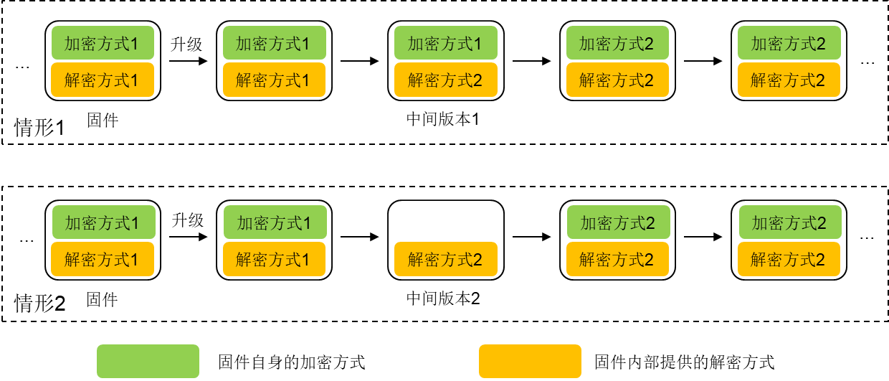

前言
在对IoT设备进行安全分析时，通常设备对我们而言像个”黑盒子”，通过给它提供输入然后观察它的反馈输出，而对设备的”内部”并不了解。如果能够通过某种方式进入设备”内部”，获取到设备的shell，则会对后续的分析提供极大的便利。
针对IoT设备，常见的获取设备shell的方式有以下几种：
- 利用设备自身提供的telnet或ssh服务；
- 利用设备PCB板上预留的调试接口，如UART；
- 利用设备存在的已知漏洞，如命令注入漏洞；
- 利用设备提供的本地升级(或更新)机制。
这里主要关注第4种方式，即利用设备提供的本地升级(或更新)机制来获取设备的shell。目前，很多厂商生产的设备都具备升级(或更新)的功能，包括在线升级和本地升级等方式。如果在升级功能的具体实现过程中缺乏对固件文件的有效校验，则可以利用这一”缺陷”，通过对固件文件进行修改及重打包，实现获取设备shell的目的。
使用该方法的前提: (1) 能够获取到固件文件；(2) 能够成功对固件进行解压及重打包。
有一些设备同时支持在线升级和本地升级两种方式，其中在线升级机制做得比较完善，但本地升级机制可能存在缺陷。对于本地升级机制存在的缺陷，可能有人认为危害很小，毕竟只能影响自己的设备，但其可能存在以下两个”隐患”：
- “软件源”污染：有人通过对固件进行修改及重打包后，将其发布到网上，而其他人下载了该固件文件，然后对设备进行升级更新；
- “暴露”设备：利用本地升级机制的缺陷，可以进入设备”内部”对设备进行更深入的分析，发现设备存在的安全缺陷。
有些设备的在线升级(或更新)机制可能也存在缺陷，此时其危害会更大。
下面以D-Link DIR-850L路由器为例，介绍如何利用设备的本地升级机制来获取设备的shell。
固件初步分析
从D-Link官网下载DIR-850L型号的路由器固件DIR850LB1_FW221WWb01.bin (截止到撰写本文时的最新版本，对应硬件版本为B1)，然后利用Binwalk工具对其分析，如下。
1 | binwalk DIR850LB1_FW221WWb01.bin |
由上可知，采用Binwalk工具没有任何输出。利用Binwalk工具计算一下该固件的熵，结果如下。
1 | binwalk -E DIR850LB1_FW221WWb01.bin |
由上图可知，该固件的熵非常高，表明该固件很有可能是经过加密或混淆的(加密的可能性更大)，导致Binwalk工具分析提取失败，因此需要对该固件的加密方式进行分析。
简单地说，一个系统越是有序，信息熵就越低；反之，一个系统越是混乱，信息熵就越高。
Binwalk工具的作者曾介绍过熵、加密和混淆等内容，更多内容可参见文末的相关链接。
固件加解密分析
在Pierre 2017年的博客Pwning the Dlink 850L routers and abusing the MyDlink Cloud protocol中，批露了其在Dlink 850L路由器中发现的10个CVE漏洞信息，其中给出了DIR850L REVB型号固件的解密方式 (针对DIR850LB1_FW207WWb05.bin、DIR850LB1 FW208WWb02.bin固件，当时应该是最新版)。
从网上下载固件DIR850LB1_FW207WWb05.bin，利用Binwalk工具对其进行分析，如下：
1 | binwalk DIR850LB1_FW207WWb05.bin |
同样，Binwalk工具没有任何输出。采用文中提供的方式对该固件进行解密，再次进行分析，如下：
1 | binwalk DIR850LB1_FW207WWb05_decrypt.bin |
可以看到，经过解密之后，Binwalk工具能够成功对该固件进行提取分析。在采用同样的方式对最新版固件DIR850LB1_FW221WWb01.bin进行解密和分析，Binwalk工具还是分析失败，说明新版的固件更换了加密方式，原有的解密方式已经不适用了。
在这种情况下，如何对新版固件的加密方式进行分析呢？通常而言，固件从一种加密方式变为另一种加密方式，中间会有个”过渡”，常见的情形如下。
其中，在情形1中，存在某个中间版本的固件，其自身采用方式1进行加密，内部提供方式2进行解密；在情形2中，存在某个中间版本的固件，其自身没有加密，内部提供方式2进行解密。因此，只需要找到对应的中间版本固件，对其进行分析，就可以知道如何对新版固件进行解密。
通过对DIR-850L REVB型号的设备固件进行分析，发现其方式类似于情形2，中间版本固件为DIR850LB1_FW210WWb03.bin。找到中间版本的固件后，需要对固件中的解密代码进行定位，以分析其解密逻辑。
加解密代码定位
由于老版本固件的加解密方式比较简单，这里选择对2.07版本的固件(DIR850LB1_FW207WWb05.bin)进行分析，来定位固件程序中与加解密相关的代码。
通过对固件进行解压提取，然后对文件系统中包含的二进制程序进行分析，发现其中的cgibin程序主要负责对http请求进行处理与响应，包括固件升级等。利用IDA Pro工具加载cgibin程序，main()函数的结构如下，其主要是根据不同的请求字符串进入不同的处理逻辑。

根据main()函数中的字符串"fwup.cgi"、"fwupdater"和"fwupload.cgi"等，对对应的处理逻辑函数进行分析，结合Pierre博客中给出的解密方式，最终定位到对应的解密代码在函数sub_4086C0()中，如下。
对应的函数调用图如下。
根据该调用路径，对2.10版本固件(DIR850LB1_FW210WWb03.bin)中的cgibin程序进行分析，定位与解密相关的代码片段，最终定位到函数sub_4090E0()。在函数sub_4090E0()中，除了有一个类似于老版本固件的解密流程外，在后面还有一部分逻辑与AES解密相关，可能是在原有基础上又采用了AES进行加密。
对应的函数调用图如下。
定位到固件解密代码后，可以通过静态代码分析和动态调试等方式理清代码的具体逻辑，进而编写相应的解密脚本，对固件进行解密。
“意外”的收获
由前面的函数调用图可知，函数sub_4090E0()在函数encrypt_main()中被调用。在对固件解密代码进行定位的过程中注意到，encrypt_main()函数在调用sub_4090E0()时，旁边还有一些其他分支，比如错误处理分支loc_4097E8，如下。
sub_408F8C()函数主要是打印一些帮助信息，而在encrypt_main()函数的开始部分调用getopt()函数来解析参数，因此猜测sub_408F8C()打印的帮助信息就是encrypt_main()函数的用法。sub_408F8C()函数的内容如下。
注意到其中的"encimg"字符串，而在对固件文件系统进行分析时，正好也有一个名称为encimg的程序，该程序的帮助说明与这个一样，猜测encrypt_main()函数的功能与它一样，即可以直接利用encimg程序对固件进行加解密。通过测试表明该猜想是正确的，这样就免去了人工分析解密代码处理逻辑的过程。
1 | Usage of encimg |
固件升级机制分析
成功对固件进行解密后，还需要对固件的升级处理逻辑进行分析，看是否存在校验机制。一种方式是对与升级过程相关的代码进行分析，看代码中是否存在相关校验逻辑。另外，也可以采用”快速试错”的方式，即尝试通过对固件文件进行修改，然后重打包并进行升级，如果升级成功则说明其机制存在”缺陷”。经过测试，通过对固件文件进行修改及重打包后，可以成功升级。
这里的校验机制是指对固件文件的校验，如文件签名校验、MD5值比对等，不包括固件头部的CRC校验等。
另外，通过在升级过程中进行抓包分析，发现请求中仅包含与固件本身相关的内容。这种仅依赖于固件文件本身的本地升级校验机制，若在实现过程中考虑不周，则很容易存在问题。相比于本地升级而言，在线升级机制可以做得更完善，因为在通信过程中可以从服务器获取一些除固件文件之外的其他信息，比如文件MD5值等，当然也需要配合使用其他的技术，如通信加密等。
固件修改及重打包
在对固件进行解密后，可以利用firmware-mod-kit工具对固件进行解压，然后对固件文件系统进行修改，比如在启动时开启telnet/ssh服务，或者植入其他程序，修改完成之后再进行重打包即可。
之后再对固件进行加密，对设备进行升级之后就可以成功获取设备的shell了。
总的来说，当利用其他方式无法获取设备shell时，从固件的升级机制入手，可能会有意想不到的收获。
相关链接
- Binwalk
- Differentiate Encryption From Compression Using Math
- Encryption vs Compression, Part 2
- Pwning the Dlink 850L routers and abusing the MyDlink Cloud protocol
- firmware-mod-kit
本文首发于信安之路，文章链接：https://mp.weixin.qq.com/s/z33L4ZmYOzFdFTv8HvrM3w